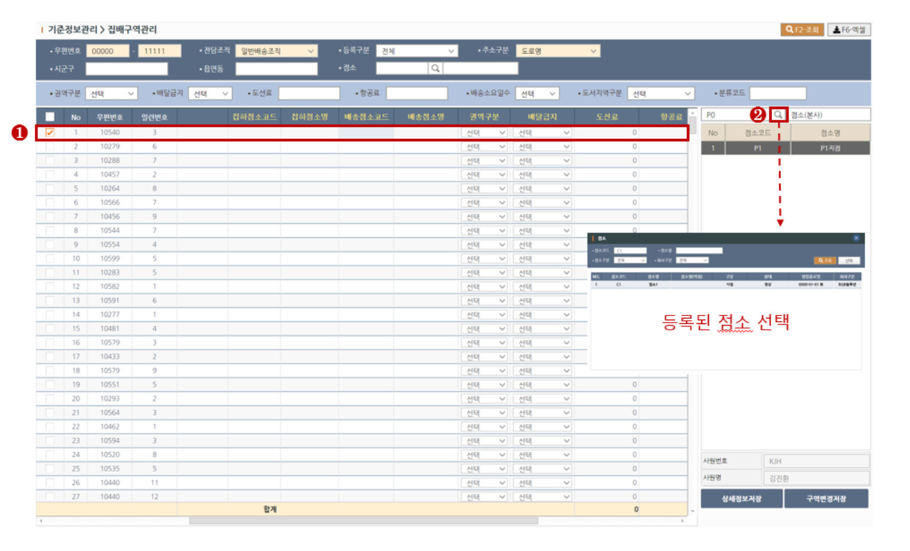

집배구역 관리
집배구역을 관리하는 화면입니다.
1. 조회하기
> STEP-1 조회목록의 필터링을 원하실땐 조회조건을 입력합니다. 노란색필드는 필수입력입니다.
> STEP-2 상단의 조회(F2)버튼을 클릭하여 조회합니다.
2. 집배정보 설정하기
2-1. 집배점소 설정방법
> STEP-1 먼저 그리드 목록에서 정보입력하려는 행을 체크합니다.
> STEP-2 우측 점소그리드 상단의 돋보기버튼을 클릭하여 등록된 점소를 조회하여 선택합니다.

> STEP-3(A) 점소그리드 목록에 나타난 점소중 하나를 더블클릭하면 좌측그리드의 집하점소, 배송점소에 클릭한 점소내용이 입력됩니다.
> STEP-3(B) [집하점소],[배송점소]필드중 하나의 필드에만 입력을 원하시는경우 해당필드 행의 빈칸을 마우스로 클릭합니다.
> STEP-4(A) 나머지 집배구역정보를 그리드상에서 입력합니다.
> STEP-4(B) 다중 입력을 원하시면 여러행을 체크한 뒤 그리드 상단의 필드값을 변경하면 체크된 행에 값이 입력됩니다.
> STEP-5 전체 내역을 저장하시려면 상세정보저장 버튼을, 집/배점소 정보만 변경하시려면 구역변경저장 버튼을 클릭합니다.